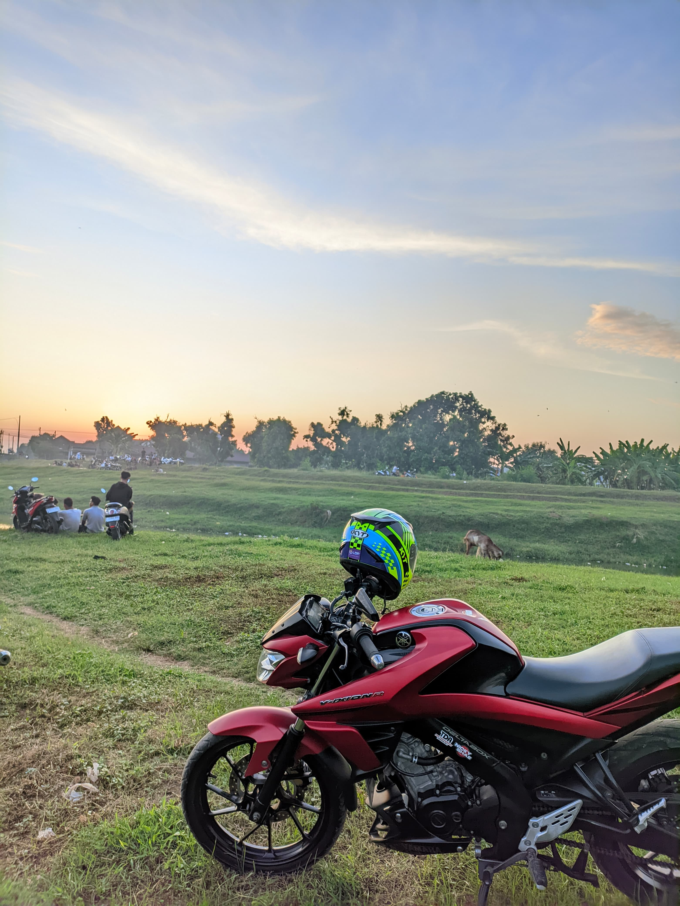

Hobi Saya - Touring Motor
Halo! Saya Ahmad Sukron, mahasiswa Politeknik Balekambang Jepara jurusan Rekayasa Perangkat Lunak. Selain memiliki minat di bidang Elektronika Industri dan Jaringan, saya juga memiliki hobi yang sangat saya nikmati, yaitu touring motor. Touring motor adalah aktivitas yang saya lakukan untuk menjelajahi berbagai tempat, merasakan kebebasan, dan menikmati alam sekitar.
Keuntungan Touring Motor
- Meningkatkan kemampuan navigasi dan perencanaan perjalanan.
- Menumbuhkan rasa kebersamaan saat berkendara dengan teman-teman.
- Memberikan kesempatan untuk menikmati keindahan alam dan budaya yang beragam.
Rute Favorit
- Sikunir: Bukit Sikunir berada pada ketinggian ±2.263 mdpl yang terletak di sebelah timur Desa Sembungan.
Daya tarik yang ditawarkan kepada wisatawan adalah golden sunrise yang digadang-gadang terbaik se-Asia Tenggara.
- Telaga Menjer Telaga Menjer terbentuk secara alami akibat letusan vulkanik Gunung Pakuwaja.
- Dieng Dieng merupakan daerah pegunungan yang dikelilingi oleh Gunung Prau, Gunung Pangonan, dan Gunung Pakuwojo.
Tips Touring Motor
- Pastikan sepeda motor dalam kondisi prima sebelum perjalanan.
- Siapkan perlengkapan touring seperti jaket pelindung, helm, dan alat komunikasi.
- Perhatikan kondisi cuaca dan rencanakan perjalanan dengan matang.
Dokumentasi Touring
Berikut adalah beberapa momen yang saya abadikan selama touring motor:
